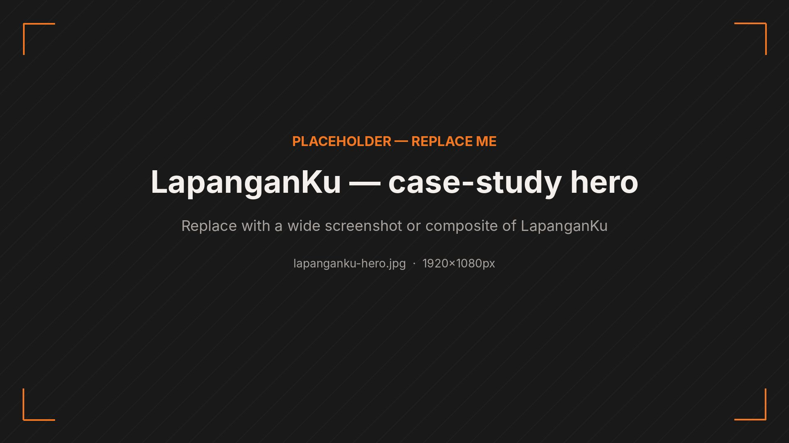
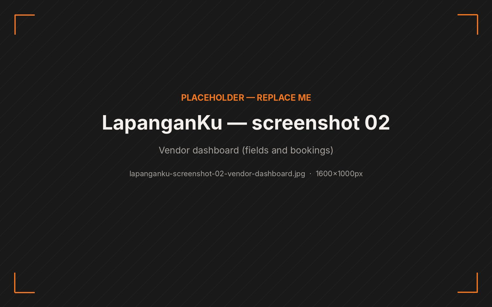
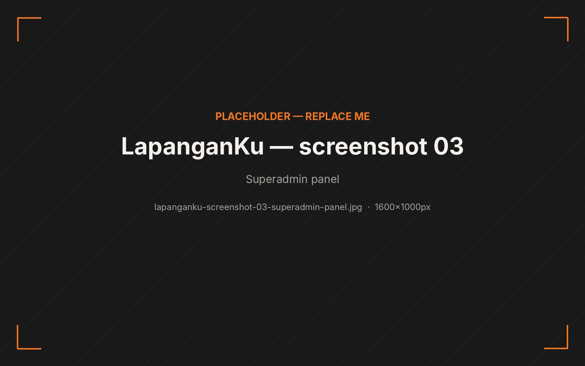

Separating roles cleanly
With several kinds of users, every screen and action has to answer one question: who is allowed to see or do this? Planning for roles early keeps that logic from spreading everywhere.
Case study 01Web App · Booking & Management
A web-based sports field booking and management application, organised around multiple user roles — from the people booking a field to the vendors who run them and the superadmin who oversees the platform.

01Overview
LapanganKu is a web application for booking and managing sports fields. It brings fields, bookings and vendors together in one system, with different capabilities for each user role and a superadmin layer for platform-wide operations.
This page separates what is implemented from what is not claimed, so the case study stays accurate.
02Problem
Sports fields are often booked by messaging or calling the venue. That makes availability hard to see and bookings hard to keep track of — for the person booking and for the person managing the field.
03Solution
LapanganKu centralises that process. Fields, bookings and vendors are handled in one application, and each role works with the tools that fit it: booking for users, field and booking management for vendors, and oversight for the superadmin.
04Main features
Role-based access so each type of user works in an interface and permission set that fits what they do.
Create and maintain sports field listings and their details.
Create, view and manage field bookings.
Manage the vendors who operate fields on the platform.
Platform-level administration reserved for the superadmin role.
Not claimed as complete. Payment flows are not presented here as a finished feature.
Not claimed. This page does not state that LapanganKu is deployed or live.
05Technology stack
06Screenshot gallery


07Development challenges
With several kinds of users, every screen and action has to answer one question: who is allowed to see or do this? Planning for roles early keeps that logic from spreading everywhere.
A booking system depends on accurate schedules. Fields, time slots and reservations have to agree with each other so the same slot is never offered twice.
Online payments and public deployment are bigger commitments than a working booking core. Marking them as not claimed keeps the project honest until they are built and tested.
08Lessons learned
A good-looking screen only works when the data behind it and the person using it are considered together — the idea I set out to understand when I started learning web development.
Role-based access is not just a permission check; it shapes navigation, screens and the questions each user is trying to answer.
Documenting what is implemented versus what is not makes a project easier to trust and easier to continue.